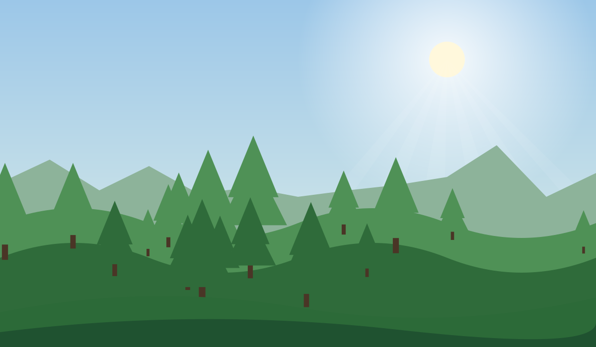

Save Our Forest, Protect Our Future.
Forest fires threaten our ecosystems, wildlife, and communities. Discover the issues, understand the impact, and take action for a greener Indonesia.
Explore ForestWatch Start Your Green Journey
- 🌳 Protect Forests
- 🦧 Preserve Biodiversity
- ♻️ Inspire Green Action

🌿Go Green
Welcome to GO GREEN
GO GREEN is a prototype platform that links environmental awareness to action: explore NASA FIRMS hotspot data for Lampung, ask EcoBot, document concerns, build daily habits, and estimate your own contributions.
Our Forests Need Us.
Forests sustain biodiversity, regulate the climate, store carbon, and support communities. Forest fires and deforestation can threaten these vital ecosystems.
ForestWatch: Monitor Lampung Hotspots.
Explore NASA FIRMS satellite hotspot detections for Lampung and understand how environmental monitoring can support early awareness.
Connecting to NASA FIRMS…
EcoBot AI — Your Environmental Assistant.
Small questions. Greener decisions. Open the chat at the bottom right, or .
See a Problem? Help Protect Our Environment.
Environmental awareness becomes more meaningful when people can document concerns and encourage responsible action.
Prototype only: Your report is stored in this browser and is not sent to government authorities or emergency services.
⚠️ If you encounter an active fire, stay away from danger and contact the appropriate local emergency services. Do not enter burning forest areas to collect evidence.
Your Daily Actions Matter.
Small habits can inspire a greener future.
Demo leaderboard FICTIONAL USERS — sample scores
Measure Your Green Impact.
Understand how everyday choices can contribute to a more sustainable lifestyle.
Results are self-reported estimates from your inputs. No carbon conversion is applied; tree counts are not verified carbon removal.
Live Greener, Starting Today.
Environmental Facts You Can Trust.
Reliable decisions depend on transparent, verifiable data. These are external references; this prototype shows no live statistics.
A Greener Future Starts With Us.
GO GREEN is a digital environmental awareness initiative designed to help people understand environmental challenges, explore forest conservation, report environmental concerns in a prototype environment, and build sustainable habits.
Environmental Awareness
Forest and Biodiversity Conservation
Community-Driven Green Action
How GO GREEN Creates Environmental Awareness.
- Discover environmental concerns.
- Explore NASA FIRMS hotspot data.
- Ask EcoBot for explanations.
- Create a demo environmental report.
- Complete a green action challenge.
- Calculate estimated environmental contributions.
Why GO GREEN?
Interactive maps, education, local reporting demos, and gamified actions can help connect knowledge with practical action. This prototype makes no claims of proven real-world outcomes.